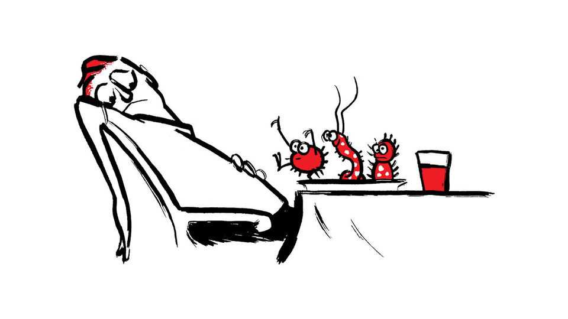
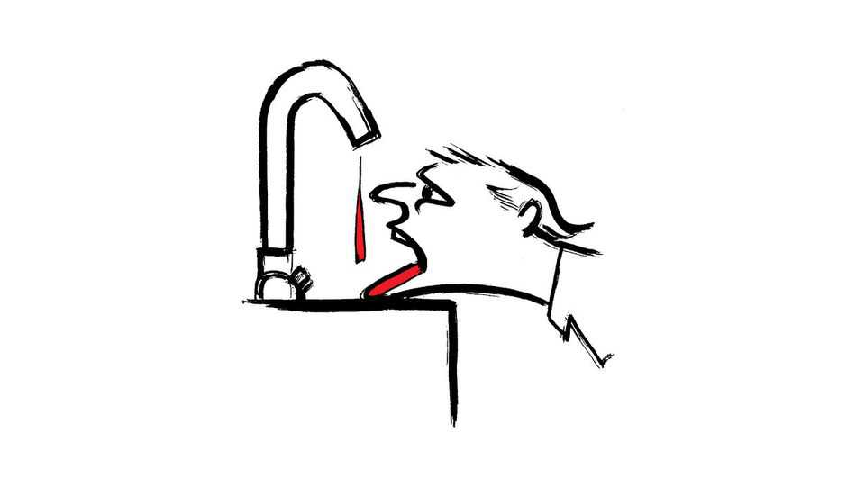

How do you improve your gut microbiome?
Also this week, Swedish wine, Norway’s new king, Britain’s hot summers, Charles de Gaulle and the Bayeux tapestry

Sep 17th 2026
Letters are welcome via email to letters@economist.comFind out more about how we process your letter
Your Well Informed column on the gut microbiome (August 15th) was right about the thing that matters most. There is no single ideal microbiome, and a varied, plant-heavy, partly fermented diet remains the most reliable way to improve your gut microbiome. However, you also claim that the idea that particular microbes matter to health has “scant published scientific basis”. A large-scale analysis of over 34,000 individuals across Britain and America was published in Nature earlier this year, pinpointing specific microbial species that consistently correlate with positive and negative health indicators internationally.
Although my co-authors and I clearly stated that these findings reflect association rather than causation—highlighting the necessity for further interventional trials—the evidence is far from scant, and the raw dataset remains publicly available. Indeed, the vital role of gut health has recently been formally acknowledged in the US Department of Agriculture’s 2026 guidelines. Continued pioneering research in this field is undoubtedly essential.
Moreover, the National Institute of Standards and Technology study you cited identifies seven companies and never names them. It also found that reproducibility varied enormously between firms. Readers meeting it directly after a paragraph about ZOE, a firm I helped found, may infer something the paper does not say.
This field deserves scepticism; a great deal of what is sold in it is indefensible. It also deserves to be judged on what has actually been published.
Professor Tim SpectorCo-founderZOELondon
Your article on growing wine in Sweden mentioned that once a winery wins approval, its “distribution is in effect handled by the government” (“Vin-dinavia”, August 22nd). This is good news, you think, as a mechanism for quality control.
Systembolaget is a state monopoly on the sale of wine and spirits to the public in Sweden. A monopoly retailer decides which producers reach the public. That is the antithesis of a liberal market, and no amount of good wine at the other end of it changes what it is. Growers must satisfy one buyer (the state) or reach no consumer at all. The state sets the terms, and the terms reward what a bureaucracy can measure. That means volume and consistency. A young industry needs the freedom to fail at both. After years of lobbying, Swedish winemakers may now sell a bottle at their own gate, on conditions strict enough to leave the retail monopoly intact. The justification for that monopoly has shifted as well. Systembolaget was built to protect public health by trying to limit how much people drank. It is now credited with building an industry, by a state that spent decades urging people to drink more wine. No industry should have to thank the state for permission to reach consumers. GRAHAM BUTLERFull professor of lawLinnaeus UniversityVäxjö, Sweden
Regarding Norway’s monarchy (“Long to reign over Oslo”, September 5th), in 1905 Norwegians were asked whether Prince Carl, the future Haakon VII, should be invited to become our king. The endorsement of monarchy was implicit. The invitation was personal. A fine distinction, perhaps, but his great-grandson, Haakon VIII, might have found considerable promise in the precedent. Given his personal popularity, the new king would have had little to fear from asking Norwegians to confirm him as their sovereign. Such an endorsement would have given him a mandate of his own, helped turn the page on his family’s scandals and offered even republicans a reason to accept his reign. And the question of the monarchy’s future might have been laid to rest for a generation.
It might also have sown the seeds of a new constitutional practice: hereditary succession subject to popular consent. The family would provide the candidate; the electorate would issue the invitation. Norway could retain the continuity and stability of monarchy while giving each sovereign a democratic warrant to serve.
Affection for Haakon’s late father, King Harald, may smooth his accession. It cannot confer consent in perpetuity. Alas, it may now fall to his daughter to seek that consent, provided there is still a throne to inherit by then.
Torbjorn Graff HugoOslo

Tim Palmer’s By Invitation column (September 5th) asked what Britain should do before next summer to tackle extremely hot weather. A memoir by Evelyn Cox on “The Great Drought of 1976”, which I found by chance in a second-hand shop, is illuminating. The Met Office judged that drought and the record wet winter implied no lasting change. The Climatic Research Unit at East Anglia at the time was telling planners to expect drier summers. But Britain gambled on getting through the summer without drastic steps, and was rescued by the winter rain. Ms Cox, carting water by lorry after her farm pond dried out, wrote that the lesson of 1976 is that water is not an easy substance to move. The quantities are so large that a national grid would be astronomically expensive, and other methods—tanker ships, containers towed behind barges, reversing rivers—raised as many problems as they solved. Her own conclusion was simpler. Act early, and impose savings before the reservoirs get too low, “because a gamble may not pay off a second time”.
BARBARA CLANCYDublin
Your article on relations between Britain and France mentioned the new film about Charles de Gaulle, “La Bataille de Gaulle” (“From Paris with love”, September 5th). The film depicts a crucial event: the Battle of Bir Hakeim in 1942. The encounter in north Africa proved to Winston Churchill the fighting ability of the free French forces, as they took on the German and Italian armies. De Gaulle’s troops bravely held out for 16 valuable days and so enabled the Allied forces to regroup prior to the first Battle of El Alamein. Churchill had every reason to be grateful to de Gaulle after Bir Hakeim. I suspect that many tourists who pass through Paris’s Bir-Hakeim Metro station have no idea of the battle’s contribution to the Allied success in the second world war.
Dr Alun EvansLondon
“Billion-dollar baby” (September 5th) reported on the many mysteries of the Bayeux tapestry. It mentioned that the arrow in Harold’s eye at the Battle of Hastings was possibly an accidental addition. The Anglo-Saxon Chronicle records that, with the battle being inconclusive, William the Conqueror assembled an assassination squad to target Harold. They chopped him to pieces. This was a natural strategy for the chess-playing duke, as killing the king wins the game.
The arrow in the eye was believed to have been added at the Norman Bishop Odo’s behest, blinding being symbolic of divine retribution, Harold having reneged on his oath to William. It was added under some duress. This made it clear to the viewer that William had not only the pope on his side, but also God. Of course, who knows how much subversive stitching was hidden in the embroidery by the press-ganged Saxon sewing team.
Duncan StephensonLeeds
Britons unable to get tickets to see the Bayeux tapestry at the British Museum can instead view a beautiful copy at Reading Museum. It was stitched together by 35 women in the late 19th century. The only difference, other than age, is that the 93 penises in the original are missing from this Victorian copy, but helpfully the curators have provided photographs of these omissions.
Michael GrimwadeFormerly of Reading